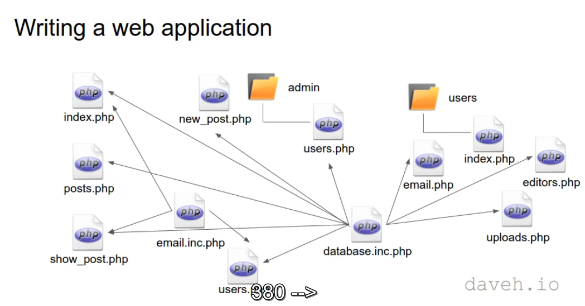
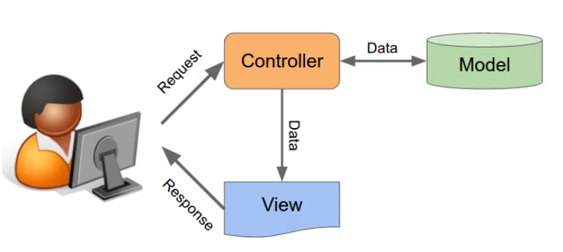

The Problems
1-Difficult to maintain the code: script files are unstructured, and you might even have horrible lines like this:
require '../../../../../database.inc.php';
2-Difficult to develop: application logic is mixed up with presentation, a programmer and a designer can't work on the same file
3-Insecure: database passwords are in a file in a publicly-accessible folder
The solution: Use a framework
A framework is a library of code. it provides structure that you can use to build your application on.
1-You can code faster
2-More that one person can work on the code at once
3-The code is less complicated, so therefore easier to maintain
4-More secure: database passwords etc. can be stored outside of the publicly accessible folder
----------------------------------------------------------
The model-view-controller pattern

Controllers:
1-are what the user interacts with
2-They receive a request from the user, decide what to do, and send a response back
3-it's the only component that interacts with the models
Models:
1-are where an application's data are store
2-Responsible for storing and retrieving data
3-Know nothing about the user interface
Views:
1-are what the user sees on the screen
2-They present the data to the user
3-Know nothing about the models


-------------------------------------------------------------
Building a PHP MVC framework
Required components:
1-A web server(for example, Apache)
2-PHP
3-A database(for example, MySQL)
Optional:
-->phpMyAdmin to manage the database
AMPPS--> is an easy to install software stack of Apache, Mysql, PHP, Perl, Python and Softaculous auto-installer that can be used on Desktops and office servers.
XAMPP--> is a completely free, easy to install Apache distribution containing MariaDB, PHP, and Perl.

The public folder:
1-The only folder accessible to the web
2-The root of the web server, the folder http://localhost/ points to.
3-The front controller and any static files(CSS, images) go in here
4-The big advantage is most of the code, including database passwords, is not in a web accessible folder and therefore is more secure

Ubuntu doesn't use httpd.conf as standard, instead global configuration stuff for apache is found in /etc/apache2/apache2.conf. You can create a httpd.conf in the apache2 directory, and load any further configuration from it by including the following line in /etc/apache2/apache2.conf.
Include /etc/apache2/httpd.conf